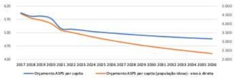

Mulher, 45 anos de idade, é admitida no PS com palpitações há 2 horas. Sem outras queixas. Exame físico: PA = 110/70 mmHg; FC = 148 bpm. ECG com da arritmia?
Homem, 65 anos de idade, apresenta cansaço, falta de ar e edema de membros inferiores há 2 meses. Exame físico: sopro sistólico em crescendo-decrescendo na borda esternal superior esquerda, como paciente sentado e inclinado para frente. Qual é a doença valvar mais provável?
Mulher, 35 anos de idade, comparece em consulta com exame de TSH solicitado por outro médico. A paciente não apresenta queixas. Exame físico: IMC = 29,5 kg/m², tiroide de difícil palpação; sem outras alterações. TSH = 6,5 mUI/L (VR 0,45-4,5). Qual é a conduta mais adequada?
Paciente com doença do re uxo gastroesofágico de longa data, assintómatico após 5 anos de uso de omeprazol. A endoscopia digestiva alta atual mostra permanência de lesão esofágica compatível com esôfago de Barrett, com biópsias revelando ausência de displasia. Quando deve ser realizada a próxima endoscopia?
Mulher, 40 anos de idade, tem diagnóstico de hipertensão arterial há 5 anos e faz uso de losartana 100 mg/dia, hidroclorotiazida 25 mg/dia e amlodipina 5 mg/dia. Traz MRPA com médias de PA de 152/96 mmHg. Exame físico: PA 150/90 mmHg, FC 70 bpm; IMC 23 kg/m²; sem outras alterações. Exames laboratoriais: creatinina = 0,7 mg/dL (VR 0,6- 1,2), potássio = 3,0 mEq/L (VR 3,5-5,5), sódio = 138 mEq/L (VR 135-145). Qual é a investigação inicial mais adequada para estabelecer a etiologia da hipertensão arterial?
Homem, 45 anos de idade, apresenta icterícia de longa duração, sem sinais de insu ciência hepática ao exame físico. Exames laboratoriais mostram transaminases normais e fosfatase alcalina 4 vezes acima do limite superior da no rmalidade. Recentemente, iniciou quadro de diarreia muco sanguinolenta com 4 episódios ao dia e discreto emagrecimento. Quais são as hipóteses diagnósticas mais prováveis?
Homem, 82 anos de idade, assintomático, apresenta hemograma com 154.000 linfócitos maduros/mm³, Hb de 11,2 g/dL (padrão normocítico e normocrômico) e 210.000 plaquetas/mm³. Exame físico sem alterações. Qual é a hipótese diagnóstica mais provável e a conduta mais adequada para confirmá-la?
Homem, 54 anos de idade, hipertenso, é trazido ao PS com quadro de febre e rebaixamento de nível de consciência. Apresenta dor em flanco direito, disúria e polaciúria há três dias. Exame físico: FC = 120 bpm; PA = 80/40 mmHg; T = 38 ºC; tempo de enchimento capilar = 5 segundos. Exames laboratoriais: hemograma com leucócitos = 19.000 cél/mm³ (desvio à esquerda), creatinina = 2,7mg/dL e lactato arterial = 36mg/dL; urina 1 com leucocitúria, hematúria e presença definitrito. Considerando a hipótese diagnóstica mais provável e as orientações da Campanha de Sobrevivência a Sepse de 2021, qual é a conduta imediata mais adequada?
Mulher, 56 anos de idade, refere crescimento progressivo de lesão na face há 3 anos. Ao exame dermatológico, apresenta pápula da cor da pele de 5 milímetros e superfície perlácea na região malar direita com telangiectasia na porção inferior. Qual é o diagnóstico mais provável e a conduta mais adequada?
Mulher, 54 anos de idade, refere episódios de alteração de coloração das mãos e pés, caracterizada por palidez, cianose e eritema, episódicas, geralmente desencadeadas pelo frio, há 6 meses. Há 2 anos apresenta queimação retroesternal pós alimentares, com pouca melhora após uso de inibidor de bomba de próton. Nega outras queixas. Qual é o diagnóstico mais provável?
Homem, 69 anos de idade, procura PS por sangramento ativo em lesão de perna esquerda após trauma em portão há 1 hora. Tem histórico de diabetes mellitus e hipertensão arterial de longa data, em tratamento regular. Trazia últimos exames realizados quatro meses antes com HbA1C = 8,2% e creatinina = 2,9 mg/dL. Exame físico: lesão cutânea sem sinais de infecção, mas com sangramento não contido por compressas locais. Exames laboratoriais: Hb = 9,4 g/dL, VCM = 87 fL (VR: 80-100 fL); leucócitos 7.230/ mm³; plaquetas = 158.000/mm³; creatinina = 3,4 mg/dL. Considerando as comorbidades do paciente, qual é a causa mais provável para a persistência do sangramento?
Mulher, 56 anos de idade, hipertensa há 8 anos, apresenta níveis de PA mensurados em sua residência acima de 140/90 mmHg. Está em uso de losartana 100 mg/dia, amlodipina 10 mg/dia e clortalidona 25 mg/dia. Não há evidências de má aderência. Exame físico: PA = 162/98 mmHg; FC = 82 bpm; IMC = 24,2 kg/m2. Exames laboratoriais: creatinina = 0,82 mg/dL; potássio = 4,2 mEq/L; urina 1 normal; USG Doppler das artérias renais normal. Outras causas de hipertensão secundárias foram excluídas. Qual é a estratégia terapêutica mais adequada para o controle pressórico desta paciente?
Homem, 18 anos de idade, previamente hígido, chega ao PS com queixa de falta de ar iniciada há 1 hora. Exame físico: Escala de Coma de Glasgow = 14, pupilas isocóricas fotorreagentes, FR = 30 irpm, SpO₂ = 70%, ausculta respiratória abolida em hemitórax direito, PA= 80/40 mmHg, FC = 133 bpm, tempo de enchimento capilar = 4 segundos, ausculta cardíaca sem alterações. Qual é o achado esperado na ultrassonografia à beira leito?
Homem, 55 anos de idade, refere dispneia aos esforços de longa data, intensi cada no último ano, com necessidade de descansar após andar cerca de 50 metros no plano. Tem tosse produtiva há 2 anos e sibilos eventuais. Procurou PS três vezes no último ano, sendo o último episódio há 2 meses, durante os quais foi medicado com nebulização e antibióticos. Está em uso de salbutamol arterial (em uso de losartana 50 mg/dia) e é tabagista de 60 anos-maço. Exames realizados: hemoglobina = 15,0 g/dL; leucócitos totais = 8500 céls/mm³ (350 eosinó los/mm³); radiogra a de tórax = hiperinsu ação pulmonar; espirometria = VEF1 pós-broncodilatador 35% do previsto. Considerando o diagnóstico mais provável e as diretrizes GOLD 2022 (Global Initiative for Chronic Obstructive Lung Disease), qual é o estágio atual da doença e a terapia farmacológica mais indicada?
Homem, 60 anos de idade, é trazido ao PS por familiares com relato de falta de ar há 1 semana com piora nas últimas 24 horas. Exame físico: Escala de Coma de Glasgow = 13, pupilas isocóricas fotorreagentes, sem sinais neurológicos focais, ausculta cardíaca sem alterações, FC = 120 bpm, PA = 70/40mmHg, tempo de enchimento capilar = 5 segundos, ausculta respiratória com estertores grossos em base direita, FR = 30 irpm, SpO₂ = 80%, exame abdominal sem alterações, membros inferiores sem alterações. Qual é a conduta mais adequada para este paciente?
Mulher, 75 anos de idade, apresenta dor, limitação aos movimentos e rigidez matinal em ombros e quadris há um mês, com pouca melhora com dipirona e diclofenaco. Refere febre baixa não aferida e inapetência, sem perda de peso. Extensa investigação evidenciou anemia normocítica e normocrômica (hemoglobina:10,2g/dL);VHS=102mm/1ª hora e PCR= 78mg/L. O PET-CT com 18F-FDG mostrou captação intensa em aorta torácica e abdominal, artérias axilares e ombros e quadris. Quais são os diagnósticos mais prováveis?
Homem, 69 anos de idade, está internado para tratamento de Covid-19 grave. Está sob ventilação mecânica, pressão controlada, com FiO² = 60%, PEEP = 12 cmH²O e relação PaO2/FiO² = 180 mmHg. Nas 24 horas subsequentes, e vo luiu hemodinamicamente estável, em uso de baixa dose de noradrenalina, piora radiológica do pulmão, relação PaO²/FiO² = 140 mmHg e volume urinário de 50 mL. Exames laboratoriais: creatinina = 4,8 mg/dL, ureia = 94 mEq/L, potássio=5,8 mEq/L, HCO³=13 mEq/L. Qual é a conduta mais adequada neste momento?
Menino, 10 anos de idade, há 1 mês foi ferido por um gato, evoluindo com lesão na mão direita que progrediu com surgimento de novas lesões no antebraço direito. Sem doenças prévias. Ao exame dermatológico, vários nódulos ulcerados de 0,3 cm a 1,5 cm em disposição linear seguindo linfático como conta de rosário, acometendo dorso da mão direita e antebraço direito. Qual é a hipótese mais provável?
Sepse é definida pela presença de disfunção orgânica ameaçadora a vida, decorrente da resposta desregulada do organismo frente a um processo infeccioso. Em relação aos critérios atuais para o diagnóstico de sepse, marque a assertiva correta:
Mulher, 34 anos de idade, procura o PS com dispneia progressiva nas últimas 2 semanas, com piora nas últimas 24 horas, associada a dor torácica ventilatório dependente em hemitórax direito há 2 horas. Está gestante de 30 semanas com pré- natal sem intercorrências e bom desenvolvimento fetal. Tem asma desde a infância com episódios de tosse, chiado e falta de ar no inverno, sem crises durante a gestação. Ao exame: BEG, afebril, taquipneica; PA= 100/60 mmHg, FC= 110 bpm, FR= 32 irpm, SpO²= 93%; ausculta respiratória com sons pulmonares globalmente reduzidos e raros sibilos; abdome gravídico; edema maleolar bilateral, sem sinais de empastamento. Exames: ECG= taquicardia sinusal; Rx de tórax= sem alterações; gasometria arterial em ar ambiente com pH= 7,45, PaO²= 66 mmHg, PaCO² = 31 mmHg, HCO³ = 20 mEq/L, SpO² = 93%. Hemograma e função renal normais. Considerando o quadro atual, qual é a conduta mais adequada?
Durante a pandemia de Covid-19, pesquisadores brasileiros conduziram um estudo transversal com o objetivo de avaliar padrões de uso de álcool na população brasileira. Para tal, foi criado um questionário virtual, cujo link de acesso fo i compartilhado em diferentes redes sociais. O questionário apresentava questões que solicitavam o relato sobre o volume de álcool consumido no mês da pesquisa. Este volume de álcool deveria ser calculado pelos participantes a partir de tabelas que apresentavam equivalência entre o volume consumido dos diferentes tipos de bebida alcoólicas e a concentração de etanol por volume em cada uma delas. Quais tipos de vieses são encontrados neste estudo?
A pro ssão médica reúne uma série de grati cações psicológicas, dentre elas o sentir-se competente, receber reconhecimento e gratidão. No decorrer da formação e da vida pro ssional, entretanto, o médico se defronta com di culdades que podem não corresponder ao que é esperado como grati cação. O grau de idealização da pro ssão gera expectativas e, se não correspondidas, geram frustrações repercutindo na sua saúde. Sobre esta a rmação, qual é a alternativa mais adequada?
A diminuição de recursos federais para o SUS nos próximos anos, indicada no gráfico abaixo, que apresenta a projeção do orçamento da União (em reais) destinado às Ações e Serviços Públicos de Saúde (ASPS), per capita e per capita para população idosa, deve-se a:

Para que um determinado território estadual se constitua numa região de atenção à saúde, é necessário que ela tenha, no mínimo, ações e serviços de:
O modelo de atenção à saúde indígena desenvolvido no país, expresso na proposta da Política Nacional de Atenção à Saúde dos Povos Indígenas (PNASPI), publicada em 2002, e organizado em um Subsistema de Atenção à Saúde Indígena (SasiSUS), parte dos mesmos princípios e diretrizes do Sistema Único de Saúde (SUS). É correto afirmar que o modelo de atenção à saúde indígena:
Mulher, 30 anos de idade, mora na rua, no centro da cidade de São Paulo. Durante a pandemia, perdeu o trabalho como manicure e passou a viver como trabalhadora do sexo. Atualmente, tem poucos clientes e, para comer todo dia, depende de doações. Esta situação de insegurança alimentar, frequente para outras mulheres no território, é vivenciada por ela com ansiedade, in uenciando em seu consumo de álcool e outras drogas. Ela tem um companheiro com quem tem uma relação afetiva estável. Nesta semana, procurou a UBS devido a atraso menstrual e foi feito o diagnóstico de gestação. Para a equipe elaborar um Projeto Terapêutico Singular, qual é a alternativa mais adequada?
A saúde da população negra tem sido comprometida em relação ao acesso aos serviços de saúde, o que caracteriza uma situação de não reconhecimento de necessidades especí cas dessa população aliada a atos sistemáticos de intolerância e atitudes racistas no cotidiano dos serviços. A Política Nacional de Saúde Integral da População Negra (PNSIPN), no Brasil, a partir de 2013, con gurou novos caminhos que viabilizassem mudanças dessa situação. Quais são as bases e diretrizes do SUS que orientaram a construção da PNSIPN?
Revisar: possível letra faltando em enunciado
A Noti cação de Receita é um documento padronizado que, acompanhado da prescrição, autoriza a dispensação/venda de medicamentos sujeitos a controle especial. Sobre as diferentes Notificações de Receitas, qual é a alternativa correta?
No Brasil, a tomada de decisão para o enfrentamento da pandemia de Covid-19 é um desa o devido sua grande extensão territorial, heterogeneidade demográ ca, social e econômica. Estudar a relação entre indicadores de saúde, demográficos, sociais, econômicos e a mortalidade por Covid-19 é de extrema importância neste contexto. Qual teste estatístico deve ser utilizado para verificar se a mortalidade por Covid-19 está relacionada com o número de leitos de UTI, Índice de Gini (numericamente, varia entre 0 e 1), Índice de Desenvolvimento Humano (numericamente, varia entre 0 e 1) e taxa de analfabetismo?
Revisar: possível letra faltando em enunciado
De acordo com as recomendações do Ministério da Saúde para as atividades da Atenção Básica no manejo operacional das Infecções Sexualmente Transmissíveis (IST), selecione a alternativa correta.
Em relação aos princípios éticos que devem orientar os ensaios clínicos aleatorizados, qual é a afirmativa correta?
Homem, 35 anos de idade, foi vítima de acidente no ambiente de trabalho com estilhaço de metal que atingiu e perfurou seu olho direito há seis horas, causando amaurose total à direita. Seus óculos de proteção estavam no bolso do uniforme. Trabalha em uma serralheria que emprega 50 pessoas. Após o atendimento de urgência, qual é a alternativa que indica uma ação de atenção ao trabalhador e a proposta de uma medida de prevenção coletiva mais adequadas a esta situação?
Sobre as atuais recomendações de metas de um paciente com diabetes mellitus segundo as diretrizes da Sociedade Brasileira de Diabetes. Qual é a alternativa correta?
O trabalho em equipe consiste em estratégia para a integração das especialidades médicas e das múltiplas pro ssões, essencial para o desenvolvimento do cuidado integral do paciente. Assinale a alternativa que contém um atributo e um instrumento para o trabalho em equipe efetivo.
Em relação à prevenção primária de diabetes mellitus tipo 2 (DM2) em adultos. Qual é a alternativa mais adequada?
Um bairro da zona sul do município de São Paulo teve em sua formação a instalação de diversas indústrias químicas e petroquímicas, responsáveis por um importante passivo ambiental, com contaminação de solo e água subterrânea por m e t a i s pesados, solventes clorados e halogenados e outras substâncias químicas perigosas à saúde humana. Posteriormente, houve aumento do interesse imobiliário na região, com a mudança do uso do solo, de industrial para residencial, comercial e de serviços. Das funções abaixo, qual é a de responsabilidade da Vigilância em Saúde Ambiental nesta situação?
Conforme a bula de teste para Covid-19 adquirido na farmácia, este tem 99,1% de sensibilidade e 95,5% especi cidade para IgM e 88% de sensibilidade e 90% de especi cidade para IgG. Qual das alternativas indica a interpretação correta destes dados?
Um estudo clínico prospectivo avaliou a mudança de peso em uma amostra de pacientes com osteoartrite de joelho submetidos a uma dieta por quatro meses. Após esse período os pacientes apresentaram uma mudança média de peso de - 1,11 kg (IC95%: [-1,52; -0,70]). Qual das a rmações abaixo melhor descreve a informação fornecida pelo intervalo de confiança de 95%?
Homem, 40 anos de idade, procura PS com quadro de hiperemia, dor e edema palpebrais à esquerda há 2 dias. Nega piora da acuidade visual e doenças pregressas. Ao exame oftalmológico: acuidade visual de 20/20 em ambos olhos, reflexos pupilares isofotorreagentes, limitação à adução do olho direito e disco óptico sem edema. Qual é a conduta inicial mais adequada?
Mulher, 75 anos de idade, relata preocupação com riscos de efeitos colaterais oculares da polifarmácia após ler uma publicação na Internet. Exame físico: visando avaliar a profundidade da câmara anterior, observa-se região de penumbra sobre a parte nasal da íris após incidência de luz paralela ao rosto da paciente. Qual das seguintes medicações presentes na prescrição da paciente tem menor risco de precipitar glaucoma de ângulo fechado?
Mulher, 44 anos de idade, 3G 3P, apresenta dismenorreia progressiva há 2 anos, associada a aumento do volume menstrual e dispaurenia, há 8 meses, di cultando o relacionamento sexual. Ao exame: útero aumentado 2 vezes de tamanho, consistência amolecida. US pélvico: útero heterogêneo, focos hiperecogênicos puntiformes em meio a trama miometrial, espessura endometrial 8 mm, volume uterino: 178 ml, ovários sem alterações. A conduta mais adequada é:
Menina, 5 anos de idade, é trazida pela mãe ao ginecologista, por corrimento abundante há 30 dias. Ao exame: hímen íntegro, corrimento branco, uído, sem odor, consistência mucoide, pH 4,2, teste das aminas negativo, ausência de lesões em vulva. A melhor conduta a ser realizada é:
Mulher, 47 anos de idade, deu entrada no PS com crise hipertensiva. Exames complementares revelaram ureia 60mg/dL e creatinina de 7 mg/dL, US de vias urinárias com dilatação ureteral bilateral acentuada. Refere diagnóstico recente de carcinoma epidermóide de colo de útero, ainda sem tratamento. A conduta mais adequada do ponto de vista oncológico é:
Mulher, 64 anos de idade, refere 2 episódios de sangramento vaginal no último mês, em pequena intensidade, com duração de 2 dias. Ultrassonografia endovaginal revela eco endometrial de 15 mm. Qual é a melhor conduta?
Mulher, 72 anos de idade, encontra-se em cirurgia para câncer de endométrio e a avaliação intraoperatória do produto de histerectomia total e salpingooforectomia bilateral mostrou ser um carcinoma endometrial, do tipo endometróide grau 1 , super cialmente invasor, estroma do colo livre. Neste caso, qual (is) procedimento (s) cirúrgicos ainda falta (m) ser realizado (s):
Mulher, 42 anos de idade, assintomática retorna ao ambulatório com resultado de mamogra a (4 incidências básicas): BI- RADS 0, mamas lipossubstituídas e microcalcificações agrupadas em área de 8mm). Qual é o complemento de imagem que deve ser solicitado?
Mulher, 32 anos de idade, IG I Parto vaginal há 4 meses, refere incontinência urinária de esforço durante a gestação, com piora no puerpério. Refere perda ao tossir, espirrar e carregar o bebê no colo. Qual é a conduta mais adequada?
Mulher, 56 anos de idade, menopausa aos 49 anos, com antecedente de câncer de mama in situ há 5 anos, procura o ambulatório com queixa de fogachos e secura vaginal há 1 ano. Qual é a alternativa correta quanto ao manejo dos sintomas?
Paciente com 33 semanas de gestação, quartigesta com 3 cesáreas anteriores, previamente assintomática, procura o pronto socorro queixando-se de sangramento vaginal moderado. Sabidamente, possui placenta de inserção baixa centro- total com sinais de acretismo em região ístmica uterina. Não apresenta dinâmica uterina, feto ativo. Ao exame especular, conteúdo sanguinolento residual, sem sangramento ativo. Qual é a conduta mais adequada?
Mulher, 24 anos de idade, refere aumento progressivo e lento, há 10 anos, de pelos em face, tórax, braço e região sacral. Apresenta ciclos menstruais regulares, com intervalo de 34 dias, uxo e duração normais, com cólicas e sintomas prémenstruais leves. Nuligesta, vida sexual ativa em uso de condom. Exame físico: IMC = 27 kg/m2, ausência de acantose nigricans, índice de Ferriman = 13. Qual é a provável etiologia?
Paciente 30 anos, 3ª gestação, 14 semanas. Na 1ª gestação teve pré-eclâmpsia com 31 semanas, parto cesárea de emergência. Na 2ª gestação entrou em trabalho de parto prematuro, evoluindo para parto normal com 32 semanas. Mesmo parceiro. Qual é a orientações no pré-natal?
Preenche critérios diagnósticos para SAAF:
Qual das opções abaixo é uma contraindicação absoluta ao tratamento com trombólise endovenosa com rtPA em paciente com acidente vascular cerebral isquêmico?
Gestante de 24 semanas esteve internada por 3 dias, com quadro de mal-estar, náusea, cefaleia, dor lombar a direita e febre de 39°C. A rma ter recebido antibióticos por via endovenosa durante a internação. Retorna ao hospital, 7 dias após a alta, referindo febre há 48 horas, fraqueza intensa e dor lombar. Exame físico: REG, descorada +, desidrata 2+, pulso 110 bpm, PA 90 x 55 mmHg; murmúrio vesícular diminuído base direita. Abdome: AU = 24cm, DU ausente, BCF = 168 BPM, doloroso flanco direito, sem sinais de irritação peritoneal. Qual é a hipótese diagnóstica mais provável?
Paciente com atraso menstrual de 7 semanas, assintomática, realiza ultrassom obstétrico inicial, visibilizado saco gestacional tópico e regular, embrião vivo compatível com a idade gestacional, vesícula vitelínica presente, ausência de áreas de descolamento ovular. Em região anexial, visibilizada formação cística anecoica de aproximadamente 6 cm de diâmetro, com reforço acústico posterior, sem septos ou áreas sólidas, vascularização periférica exuberante ao estudo Doppler. Frente a esses achados, qual é a conduta recomendada?
Secundigesta, 38 anos de idade, com idade gestacional de 10 semanas, apresenta glicemia de jejum de 94 mg/dL, colhida há 2 dias. A gestação anterior, há 5 anos, transcorreu sem complicações e com parto normal a termo de recém-nascido com peso adequado (3300g). Qual deve ser a orientação, baseado no resultado laboratorial apresentado?
Gestante de 10 semanas procura o pronto socorro queixando-se de dor abdominal há 2 dias, periumbilical com irradiação para região lombar e fossa ilíaca direita, associada à inapetência. Há 4 horas, iniciou quadro de febre (38oC), vômitos e parada de eliminação de gases e fezes. Nega alteração do hábito urinário, disúria ou polaciúria. Ao ultrassom, gestação tópica, feto vivo, sem sinais de descolamento ovular, presença de discreta quantidade de líquido livre em região anexial direita. Hemograma com 18.800 leucócitos, desvio até metamielócitos. O Hospital não dispõe de ressonância nuclear magnética e não é possível transferência hospitalar neste momento. Qual é a conduta recomendada?
Menino, 1 ano e 10 meses, comparece à consulta de puericultura e a mãe refere que ele não fala nenhuma palavra, mas entende ordens e aponta o que quer. Na consulta, permaneceu muito atento ao celular, interagindo pouco com o entorno e com as pessoas. Quando solicitado, removeu seus sapatos com ajuda, empilhou 3 potes, apontou algumas guras de animais e objetos e chutou bola. Não emitiu palavras durante a consulta. No prontuário da criança constava crescimento e desenvolvimento adequados até 1 ano e 2 meses de idade, quando o atendimento foi interrompido devido à pandemia. Criança nascida a termo, sem referências de intercorrências no pré-natal e no parto. Testes de triagem neonatal normais. Qual é a conduta mais adequada?
Primigesta de 27 semanas é internada com o diagnóstico de rotura das membranas. Na internação recebeu ciclo de corticoide (betametasona) e foi pesquisada a presença de Estreptococo beta hemolítico. Exames laboratoriais: Hb 11,3; Ht 34%; leucograma 8700 sem desvio; PCR 4,3. Ultrassonogra a: feto único em apresentação pélvica, placenta corporal anterior grau 0, ILA 5,6 cm (normal de 8 a 18 cm), peso estimado 950g (entre o percentil 10 e 50). No 3° dia de internação, paciente evolui com contrações uterinas ritmadas (3 em 10 minutos) e dolorosas. Qual é a melhor conduta?
Paciente na 1ª consulta de pré-natal, traz resultado de citologia cervicovaginal com atipias em células escamosas – não se podendo excluir lesão de alto grau. Realiza colposcopia na 14ª semana de gestação, evidenciando epitélio acetobranco espesso em topogra a de JEC, adentrando canal endocervical, associado a vasos atípicos e ulceração sangrante ao toque da pinça Cherron. Qual é a conduta recomentada?
Menino, 3 anos e 2 meses de idade, apresenta índices antropométricos: estatura para idade = +2,2 escores Z e índice de massa corporal para idade = -2,2 escores Z. Segundo a OMS, qual é o diagnóstico da sua condição nutricional?
Introdução à púrpura trombocitopênica imunológica PTI Menina, 13 anos de idade, previamente hi Nega uso de medicamentos e casos de hemorragia em seus familiares. Exame outras alterac HCM = 31 pg; CHCM = 33 g/dL; RDW = 13%; leucócitos = 7000/mm³ ; bastões = 4%; segmentados = 60%; linfócitos = 28%; monócitos = 5%; plaquetas = 4000/mm³. Considerando a principal hipótese diagnóstica, a plaquetopenia ocorre por:
Menino, 4 anos de idade, apresenta há 4 meses febre e infecções recorrentes. Há 10 dias acorda com dor nas pernas e há 7 dias tem febre diária e adinamia. Exame físico: palidez cutânea e mucosa, esplenomegalia e adenomegalia generalizada. Considerando a hipótese diagnóstica mais provável, qual é o eritrograma esperado?
Menino, 4 anos de idade, portador de doença renal crônica estágio 3b por displasia renal, apresenta falha de crescimento persistente, definida como estatura abaixo do 3º percentil para a idade e sexo, e velocidade de crescimento abaixo do 25º percentil nos últimos 6 meses. Trouxe exames na consulta de rotina: creatinina = 1,4 mg/dL, ureia = 68 mg/dL, sódio = 138 mmol/L, HCO₃ adequada?
Lactente, 18 meses de idade, portador de mielomeningocele, apresentou ana laxia intraoperatória durante a sua terceira intervenção cirúrgica. Qual é a causa mais provável?
Menino, 9 meses de idade, previamente hígido, passou a tarde com uma cuidadora e, ao chegar em casa, apresentava-se sonolento e não aceitou o jantar. Cerca de uma hora depois, foi trazido pela mãe ao PS com episódio de convulsão. Segundo a mãe, o paciente não apresentava febre, alterações de estado geral ou recusa alimentar anteriormente ao quadro. Após cessação do episódio convulsivo, observa-se criança não responsiva, com escoriações na face e no dorso. Assinale a alternativa que indica os exames necessários para elucidação diagnóstica.
Os indicadores de aleitamento materno no Brasil apresentaram melhora significativa nos últimos 40 anos. Tal fato se dá devido a políticas públicas integradas em nível hospitalar, atenção básica e social. A Lei 12.265/2006 (NBCAL) representou um marco importante na proteção da amamentação. Esta lei versa sobre:
Recém-nascido pré-termo de 30 semanas interna em UTI neonatal para realizar fototerapia por icterícia e para ganhar peso. Não apresenta outras intercorrências perinatais. Qual dos exames de imagem abaixo é necessário ser realizado neste contexto e para pesquisar qual patologia?
Menino, 5 anos de idade, recebeu alta hospitalar há 15 dias com diagnóstico de asma e foi encaminhado para acompanhamento. Apresenta crises recorrentes de sibilância desde os 4 anos, que ocorrem a cada 2 a 3 meses, desencadeadas por resfriado, mudança de tempo e contato com poeira, com boa resposta ao salbutamol. Atualmente tem apresentado tosse e chiado no peito ao correr, ao rir e ainda acorda à noite por tosse e falta de ar de 1 a 2 vezes por semana. Qual a conduta recomendada de acordo com o GINA 2022 para o tratamento de manutenção da asma?
Menino, 3 meses de idade, vem apresentando irritabilidade constante e choro intenso à manipulação. Exame físico: regular estado geral, choroso, eupneico, descorado ++/4. Abdome com fígado palpável a 3 cm do rebordo costal (RC) direito e baço a 2 cm do RC esquerdo; sem outras alterações. Exame laboratorial: VDRL positivo 1/64. Conceitualmente, qual manifestação tardia da doença ele pode apresentar?
Considerando a Lei 14.154, de 26 de maio de 2021, a respeito da ampliação da triagem neonatal biológica em todo o país, a incorporação de técnicas de biologia molecular será fundamental para a triagem de:
Menino, 1 ano e 8 meses de idade, foi diagnosticado há 1 dia com meningite por 1 irmão de 4 anos com vacinação completa. Frequenta a creche cuja classe tem 8 crianças com situação vacinal desconhecida e 2 professoras. Há 3 dias passou 1 dia na casa da madrinha grávida de 20 semanas, pois estava com febre e não pôde ir à creche. A quimiopro laxia com rifampicina, iniciada preferencialmente nas primeiras 48 horas, está indicada para:
Recém-nascido (RN) do sexo feminino, com idade gestacional de 39 semanas, peso de nascimento de 3200g, filho de mãe primigesta, não teve intercorrências na gestação e no parto. Exame físico com 18 horas de vida: ictérico zona II, sem outras alterações. Tipagens sanguíneas: Mãe O Rh positivo e RN A Rh positivo. Assinale a alternativa correta sobre a avaliação laboratorial do RN.
Menino, 4 anos de idade, é acompanhado no ambulatório de nefrologia pediátrica desde os 2 anos de idade com diagnóstico de síndrome nefrótica corticorresistente. Foi admitido em unidade de emergência com quadro de descompensação clínica com anasarca e febre associada dor abdominal difusa de forte intensidade com início há 24 horas. Exame físico: anasarca, macicez móvel e descompressão brusca positiva difusamente no abdome. Considerando a principal hipótese diagnóstica, qual é o principal agente etiológico implicado?
Menino, 8 anos de idade, apresenta artrite em joelhos e tornozelos há 9 meses, com piora progressiva. Relata dor nestas articulações e na região lombar, especialmente depois de acordar pela manhã. Nega febre, emagrecimento ou adinamia. E x a me s laboratoriais: hemograma normal e aumento da proteína C reativa (25 mg/L) e da velocidade de hemossedimentação (55 mm na 1ª hora). Qual achado no exame físico é mais provável de ser encontrado neste caso?
Menino, 9 meses de idade, apresenta febre (39 ºC) e diarreia há 1 dia. A mãe refere 6 evacuações nas últimas 24 horas, com sangue, muco e pus nas fezes e nega problemas anteriores de saúde. Exame físico: paciente está choroso, toma água oferecida pela mãe com avidez e apresenta choro sem lágrimas. Qual é a conduta mais adequada?
Menino, 3 anos de idade, é internado por pneumonia com derrame pleural. Qual alternativa abaixo indica drenagem do derrame?
Adolescente, portadora de doença falciforme Hb SC, está internada há 5 dias, com dor intensa na perna esquerda, com di culdade para deambular, com pouca resposta a opióde e febril desde o segundo dia de internação, sem foco evidente ao exame físico. Ultrassonogra a mostrou abaulamento periosteal em tíbia. Quais são os agentes etiológicos mais prováveis?
Mulher, 78 anos de idade, sofreu queda ao solo sem desnível. Apresenta-se consciente, hemodinamicamente estável e com vias aéreas pérvias. É trazida ao Pronto-socorro sobre uma maca por incapacidade para deambular por dor. Após realização da radiogra a de pelve, constatou-se uma fratura desviada e instável do colo do fêmur direito. Assinale a alternativa que descreve CORRETAMENTE a deformidade clínica do membro que essa paciente tipicamente apresenta e os músculos que contribuem para o desvio desta fratura.
Homem, 53 anos de idade, apresenta quadro de hematúria. Qual é o diagnóstico mais provável?
Menino, 14 anos de idade, apresenta dor leve no joelho direito, mais frequente à noite. Refere um trauma leve no local há 03 meses. Nega febre, mas observa calor local. Ao exame físico, apresenta-se em bom estado geral, deambula sem alteração de marcha. O joelho encontra-se edemaciado sem rubor, sem dor a palpação de proeminências ósseas. Arco d e movimento 0 a 110˚ de exão. Testes de Appley e McMurray negativos. Exames complementares apresentam-se alterados: níveis séricos elevados de Fosfatase Alcalina e na radiogra a do joelho, esclerose difusa na metá se distal do fêmur. Qual é o diagnóstico mais provável?
Homem, 64 anos de idade, chega ao pronto-socorro com quadro de perda ponderal de 10 kg há 3 meses, empachamento pós-prandial e vômitos há 2 semanas. Refere que os episódios de vômitos apresentam o alimento ingerido e acontecem 2 horas após as refeições. Não há presença de bile. Refere melhora após os vômitos. Tem antecedentes de tabagismo, etilismo e laparotomia exploradora prévia há 12 anos por ferimento de arma de fogo. Ao exame físico o paciente apresenta- se emagrecido, sem dor a palpação, com abdome levemente distendido em andar superior esquerdo. Qual é a hipótese diagnóstica sindrômica mais compatível com o quadro clínico descrito e sua a principal causa etiológica?
Qual o teste de maior acurácia para o diagnóstico de TVP (trombose venosa profunda) com ultrassonografia?
Homem, 60 anos de idade, assintomático, ao realizar ultrassom abdominal de rotina apresentou dilatação da aorta abdominal abaixo das artérias renais de 4,5 cm. Seguindo a recomendação da Diretriz Brasileira para o tratamento do aneurisma de aorta abdominal. Qual é a melhor abordagem para o caso?
Mulher, 54 anos de idade, refere dor e abaulamento em região inguinal direita aos esforços há cerca de 2 meses. Exame físico: pequeno abaulamento redutível na altura da prega inguinal. Ultrassonogra a: hérnia unilateral redutível com anel herniário estimado de 2 cm. Qual é a conduta mais adequada?
Para qual dos seguintes pacientes a biópsia do linfonodo sentinela seria recomendada?
Sangramento na População Pediátrica Lactente, sexo masculino, seis meses de idade, apresenta episódio súbito de enterorragia com moderada repercussão hemodinâmica. Qual é o exame mais adequado para o esclarecimento diagnóstico?
Homem, 44 anos de idade, chega ao pronto-socorro imediatamente após ter sofrido uma lesão na ponta do polegar esquerdo enquanto trabalhava com uma serra de mesa. O exame físico mostra uma ferida de 1,5x1,5 cm envolvendo a ponta do polegar com osso visível na base da ferida. Qual é a conduta mais adequada?
Homem, 30 anos de idade, vítima de queimadura de segundo grau super cial em toda a face por líquido aquecido. Apresenta queimadura de espessura total de pele em ambas as pálpebras inferiores. Nesta situação deve-se:
Lactente, 5 meses de vida, apresenta episódios repetidos de abaulamento endurecido, hiperemiado e doloroso em região perianal. Foi submetido a tratamento com antibioticoterapia oral em todas as ocasiões, porém houve recidiva da lesão no mesmo local após o término do tratamento. Qual é o diagnóstico mais provável?
Mulher, 55 anos de idade, é atendida na sala de emergência com quadro de dispneia e cornagem. Após instalação de cateter de oxigênio a 5 litros por minuto a paciente apresenta melhora, porém permanece com o quadro de respiração ruidosa. Durante investigação verifica-se que a paciente esteve internada em UTI há um mês, necessitou de ventilação mecânica e foi submetida a intubação orotraqueal. Qual é a melhor conduta?
Criança, 10 anos de idade, dá entrada no PS vítima de atropelamento há 30 minutos. Exame físico: taquipneia e choque. Durante o atendimento inicial constata-se pneumotórax à direita, além de fratura de fêmur. Realiza-se então a drenagem pleural à direita e reposição volêmica, com estabilização dos parâmetros hemodinâmicos. Raio X de tórax: dreno pleural bem locado, pneumomediastino e expansão pulmonar parcial do pulmão direito. Assinale a alternativa correta.
Mulher, 85 anos de idade, pesando 45 kg, e com1,65m de altura. Será submetida a desbridamento e troca de curativo à vácuo em membro inferior esquerdo. Tem antecedente de AVC isquêmico e síndrome coronariana aguda. É optado por realização de raquianestesia com punção entre L2-L3. Em relação ao anestésico local e técnica para raquianestesia. Qual é a conduta adequada?
Lactente, sexo masculino, 9 meses de idade, apresenta dor e distensão abdominal súbitas seguidas de vômitos. Exame físico: desidratado ++, abdome distendido e RHA aumentados com timbre metálico. Toque retal: presença de muco sanguinolento no reto. Qual é o tratamento inicial?
Homem, 28 anos de idade, previamente hígido, foi submetido a drenagem pleural no 5º espaço intercostal por pneumotórax espontâneo. No momento imediato após a drenagem pleural já apresentava escape aéreo pelo dreno. No 8º dia de internação hospitalar ainda mantinha fístula aérea. Em relação aos dados apresentados na história clínica, Como isso se mostra no frasco de drenagem e qual é a melhor conduta?
Mulher, 76 anos de idade, apresenta na radiogra a de tórax um alargamento do mediastino antero superior com desvio da traqueia para lado direito. Exame físico: BEG e eupneica. Ausculta pulmonar: observa-se MV + bilateralmente sem RA. Ausculta cardíaca: bulhas rítmicas, normofonéticas e sem sopros. Frequência cardíaca: 72 bpm. O abdome encontra-se globoso à inspeção, flácido, indolor e sem visceromegalias à palpação. Qual é a hipótese diagnóstica?
Homem, 23 anos de idade, dá entrada no PS após sofrer acidente motociclístico há 25 minutos. Exame físico: hematoma subgaleal frontoparietal esquerdo, agitação psicomotora, pupilas isocóricas e fotorreagentes, presença de clônus patelar inesgotável e hemiplegia esquerda. Escala de Coma de Glasgow: melhor resposta motora- 6; melhor resposta ocular-4 e melhor resposta verbal-3. Tomogra a axial de crânio: lesão hiperdensa com 20 mm de diâmetro, na topogra a do ramo posterior direito da cápsula interna. Qual é o diagnóstico mais provável?
Homem, 40 anos de idade, encontra-se internado na enfermaria em 4º pós-operatório de pneumonectomia direita por sequela de tuberculose. Durante o seguimento do pós-operatório, a radiogra a do 1º PO mostrava cavidade pleural à direita e a radiogra a de tórax atual revela cavidade pleural direita com nível hidroaéreo. O paciente encontra-se eupneico e com boa evolução clínica. Qual é a melhor conduta?
Menino, 2 anos de idade, vem encaminhado por diagnóstico de distopia testicular. Exame físico: pênis de 4 cm, uretra tópica e com boa exposição de glande. Testículos não palpáveis bilateralmente. Antecedentes familiares: irmão mais velho faleceu após quadro de vômitos na primeira semana de vida. Qual é a conduta mais adequada?
Recém-nascido do sexo feminino, com desenvolvimento neuropsicomotor normal, apresenta-se mais “irritada” e leta ha ́ 15 dias, segundo a mãe. Refere que as “veias do rosto e da cabec “olhando para baixo”. Com este quadro clínico, qual é o melhor exame inicial a ser solicitado? Respostas: 1 12 23 34 45 56 67 78 89 100